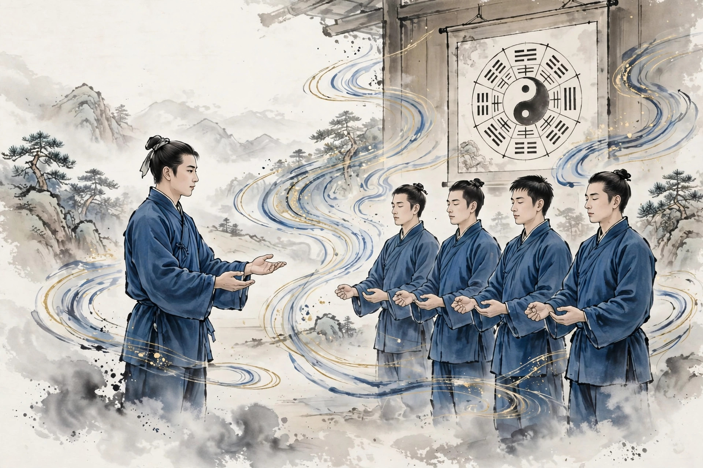
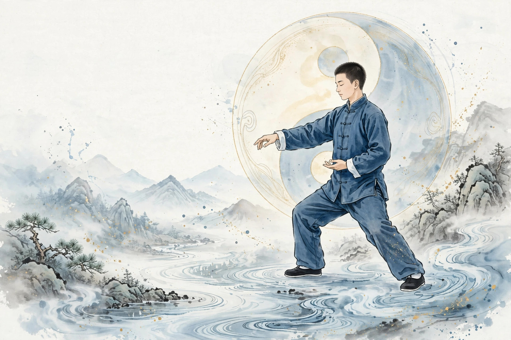
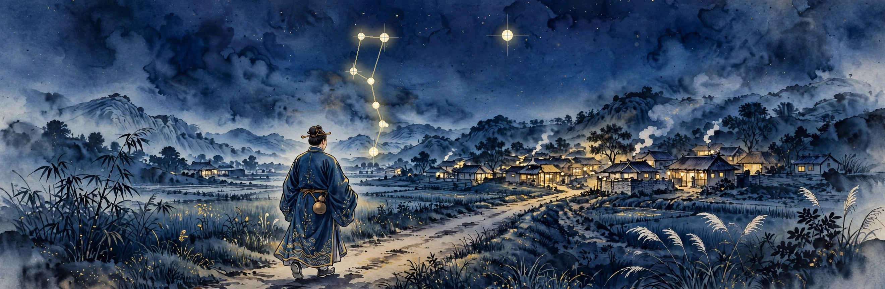
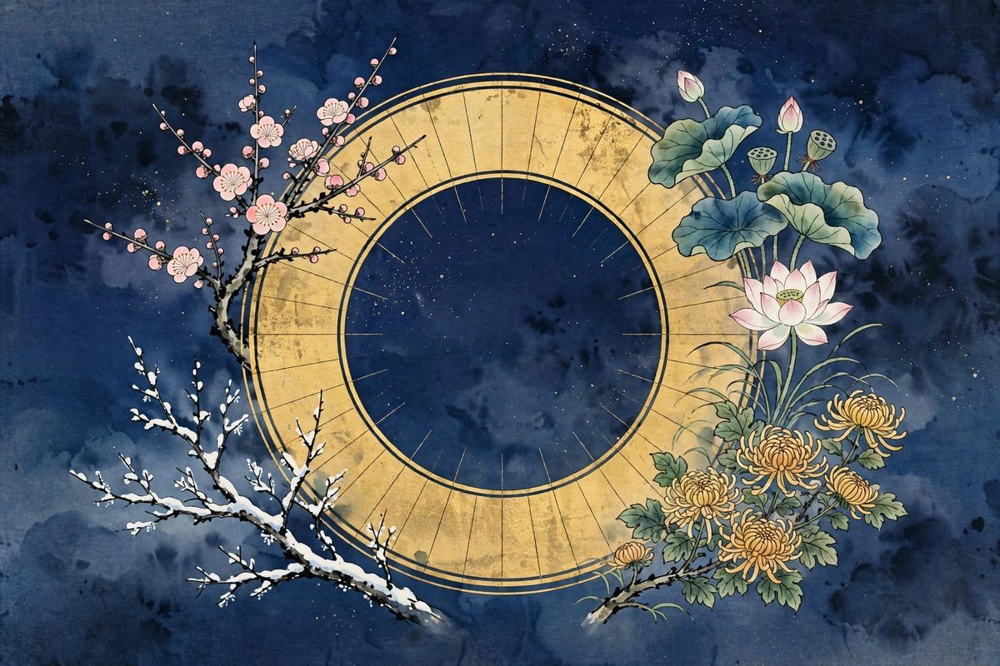
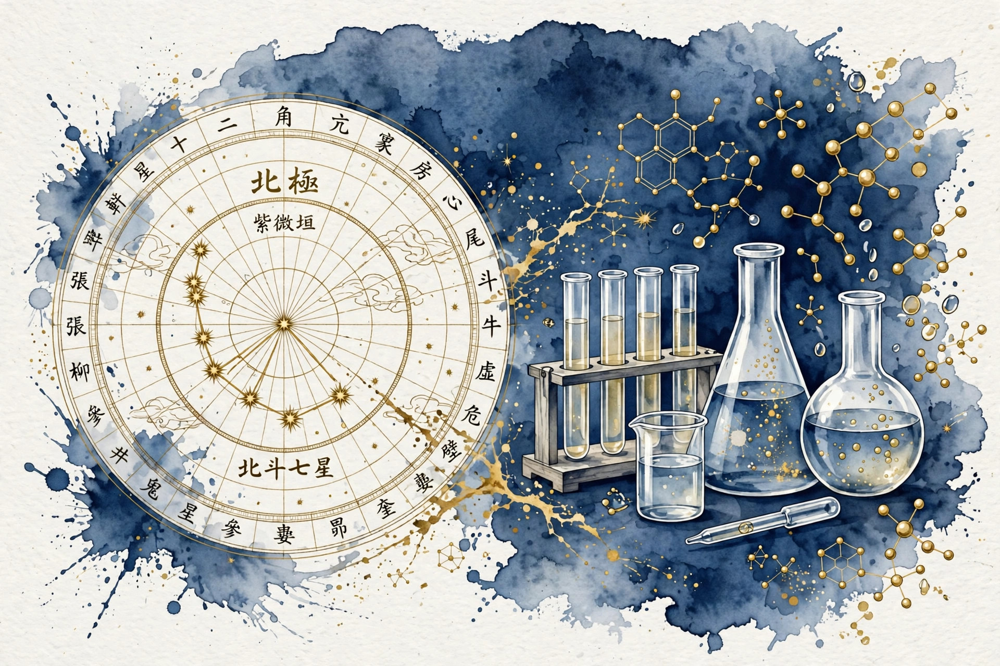
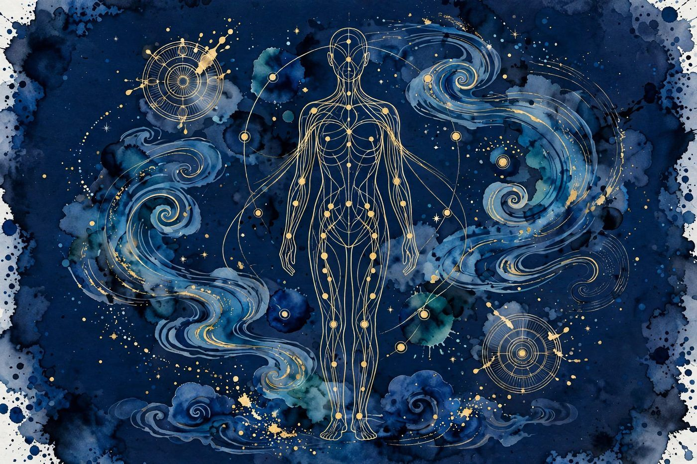
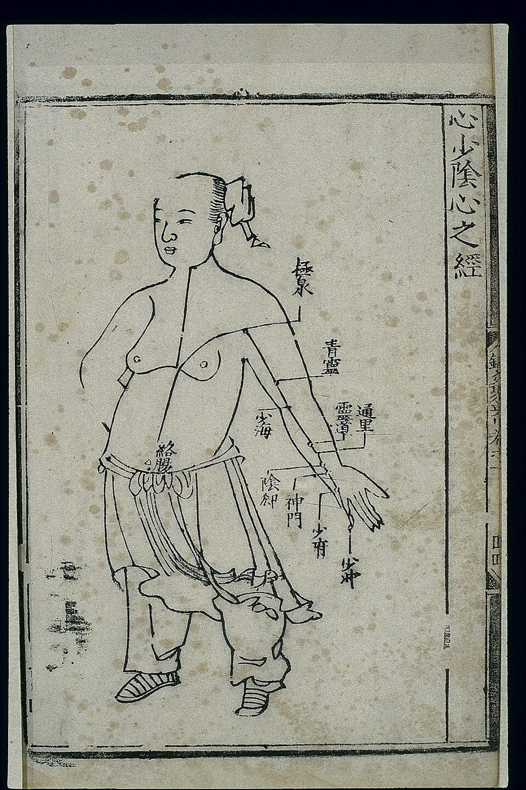

Hokushinkai
気功施術と養生、武術の稽古 ― 全国へ出張します
整えるのは、気の流れ。
臨床30年、武術45年。経絡を読む鍼灸師による、気功の施術と稽古。
北辰会 代表 抱元
About
北辰会について
北辰会は、気功の施術と養生の稽古、武術指導を行う会です。拠点は大阪に置き、施術と講習会は、ご希望の土地へ出かける「行脚」の形でもお受けしています。
北辰とは、北極星のこと。空の中心で動かない星です。身体にも、ぶれない中心が必要だと考えています。
Three Pillars
3つの柱
施術、稽古、武術 ― 中心にあるのは、気の流れを読むことです。



Profile
代表プロフィール

抱元（ほうげん）／平賀辰人（ひらが たつひと）
臨床30年、武術歴45年。推拿に少林内功を、意拳に武術気功と養生気功を学び、焦国瑞気功に取り組んできました。鍼灸師として経絡の知識を土台にし、施術と稽古の両方を行っています。
プロフィール全文
Journey
出張・行脚のご案内
星を道しるべに、土地から土地へ
北辰会は、土地ごとに日程を組み、講習会・施術・武術指導をまとめてお届けする出張を行っています。開催のリクエストはお問い合わせフォームからお寄せください。日程が決まり次第、このサイトでご案内します。
現在：開催リクエスト受付中Notes
注意事項
施術は医療行為の代替ではありません。通院中の方は、主治医の治療を優先してください。
妊娠中の方、体調に不安のある方は、ご予約の際にご相談ください。
感じ方には個人差があります。特定の症状の改善をお約束するものではありません。
Reading
読みもの ― サイトの歩き方
このサイトは、気功と中医学の読みものとしても作っています。
気功の基礎知識気功が初めての方の入口ページです。→ 傷病名から探す中医学事典病気との関係を中医学の角度から知りたい方へ（200項目）。→
中医学用語集専門用語はこちらで確認できます。→
気功と科学研究の到達点を正直に整理した、判断材料のページです。→
コラム季節の養生を、毎日書いています。→
経絡各論十二正経・奇経八脈と、全309の経穴を全件記載しています。→ページ右下の「🔍 検索」から、病名・用語・功法でサイト内を横断検索できます。